01
电源启动类
承载设备开机、关机、启动、暂停与停止等核心控制。
统一 LED 载体下的信息分类、场景布局与按键交互规则，建立跨品类清晰、一致且易理解的界面与操作体验。
统筹各品类界面信息和功能，所有信息可分为下面七类：
承载设备开机、关机、启动、暂停与停止等核心控制。
用于切换设备的工作模式、使用场景或任务类型。
承载用户主要任务，是程序选择和功能操作的核心区域。
为主程序提供增强、辅助或个性化能力，可按需选择。
用于调节温度、时间、档位、转速等参数。
显示运行状态、任务阶段、异常提醒及操作反馈等。
集中显示时间、温度、档位以及其他可变数值。
同类信息在界面中需位于相同区域，并依据重要度、用户使用习惯和交互易用性进行成组化布局。
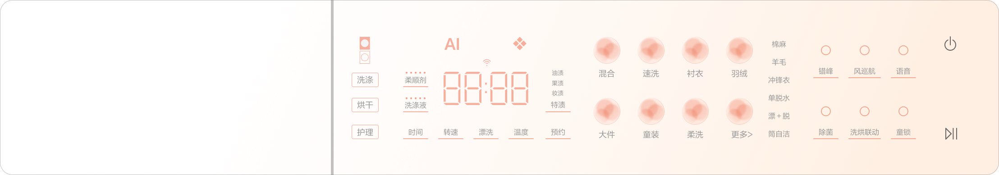
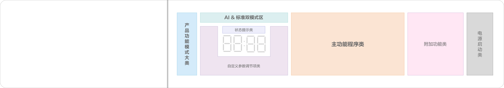
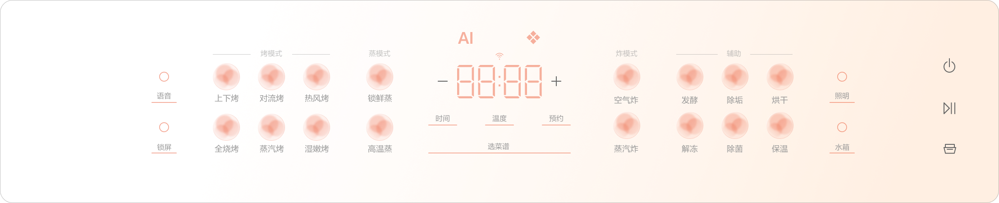
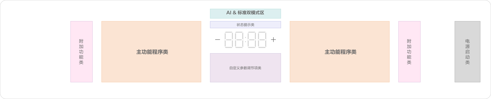
统筹各品类 UI 界面与产品机身的位置关系，显示界面的界面布局逻辑分为三类。
中心向两侧对称展开，中心区域是模式选择、参数与调节；外侧是主功能程序选择项，再外侧是附加辅助功能开关；电源和启停键独立置于最右侧。
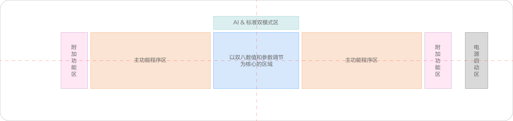
中心向两侧对称展开，中心区域是模式选择、参数与调节。为了聚合用户交互中心，电源和启停键也可以放置在中心下侧；外侧是主功能程序选择项，再外侧是附加辅助功能开关。
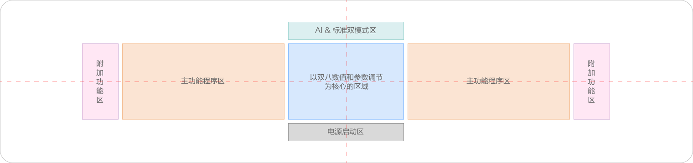
界面中的核心元素与滚筒洗衣机机身筒的中心位置保持对齐，模式、时间及主要状态信息集中在视觉中心，其余功能围绕核心区域有序展开。
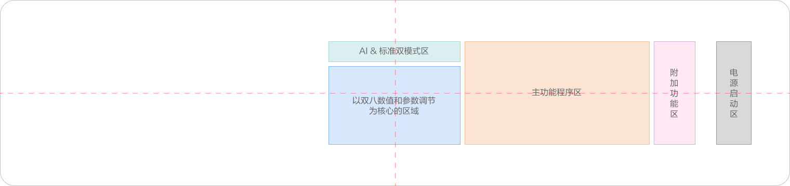
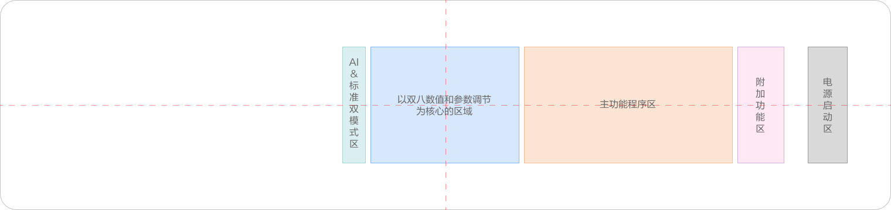
以机身筒中心作为界面视觉锚点，核心状态保持在中心区域，程序、参数、附加功能以及启停操作按照任务关系向两侧或周边展开。
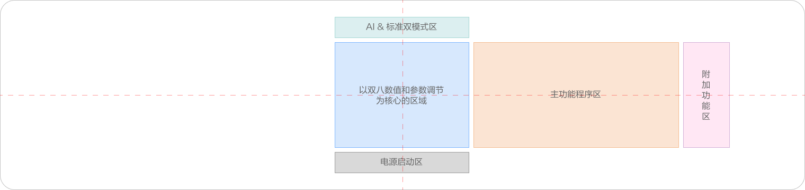
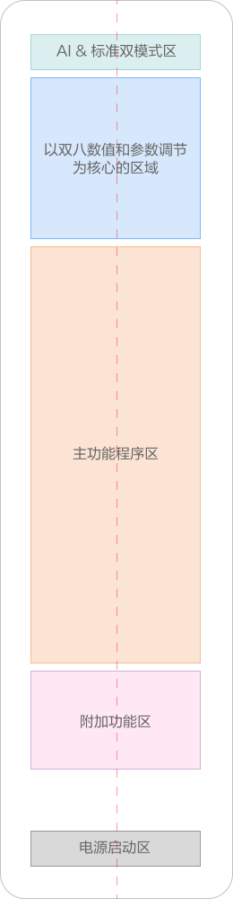
从上至下依次为：
独立置于最下侧。
信息分组要以统一方向维度分割，保障用户交互流是一个线性大方向，不要出现“Z”型、“N”型交叉折返。
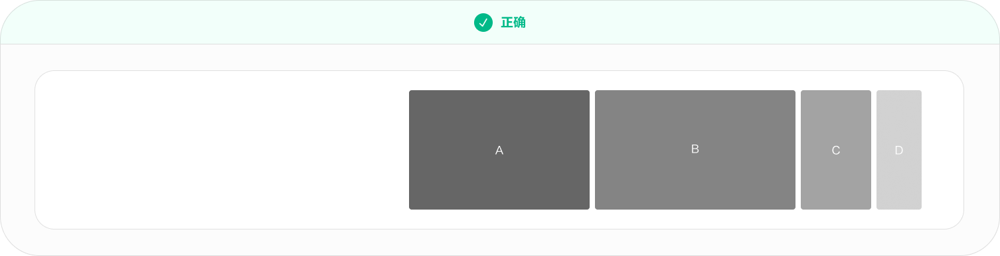
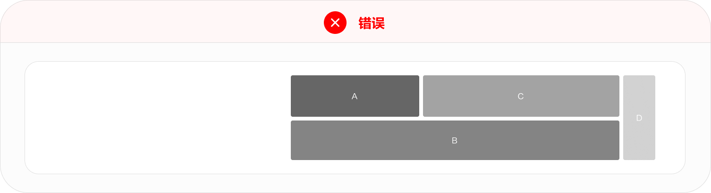
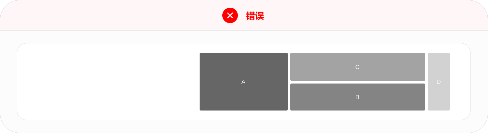
以核心状态为视觉锚点，向两侧组织程序、参数及附加功能，并适配不同显示区域高度。
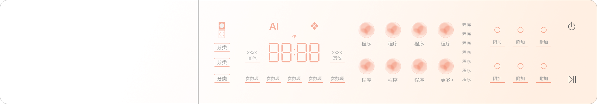
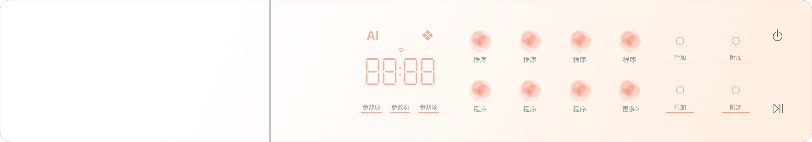
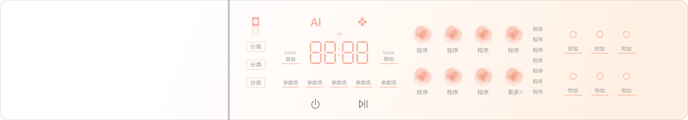
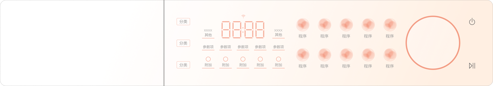
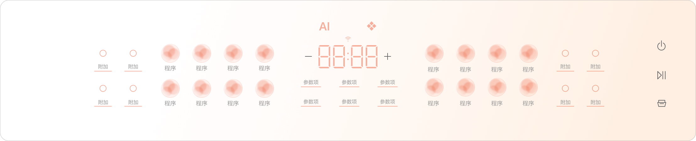
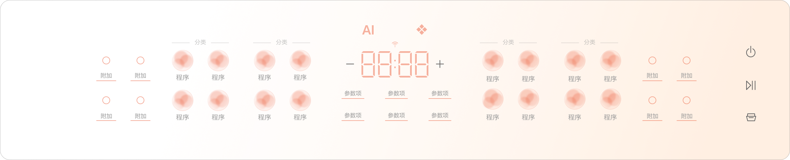
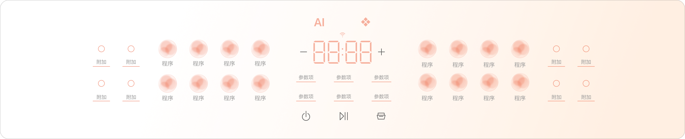
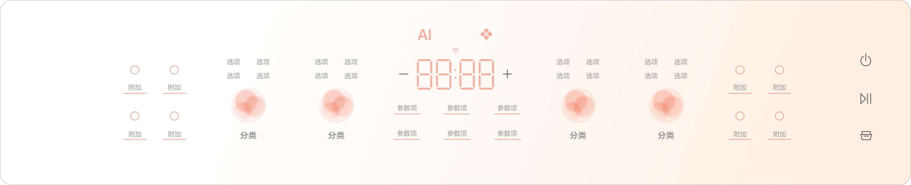
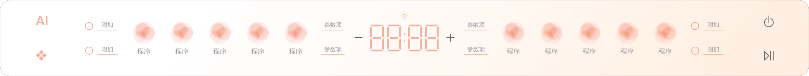
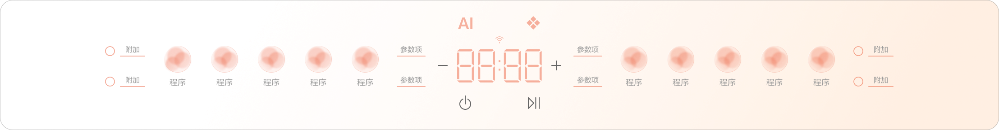
洗碗机等产品的显示区域位于门体上沿侧面时，界面可向操作侧集中布局，以操作可达性优先。
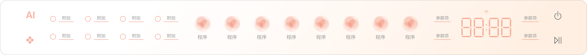
以烟机为代表，界面不依赖中心数值显示时，按任务关系组织功能与状态，保持操作路径清晰。
适用于冰冷与空调等竖向显示区域，依据载体宽度选择宽界面或窄界面结构。
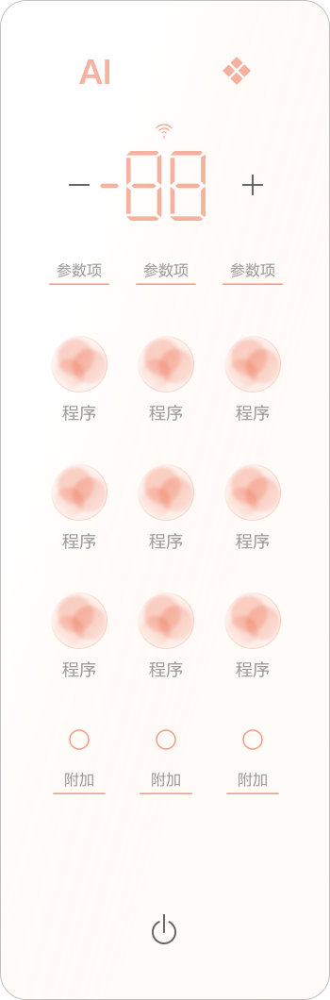
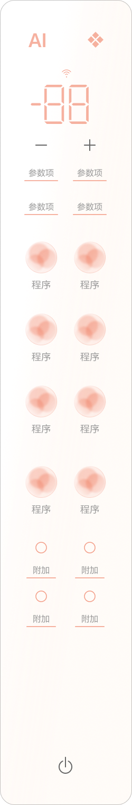